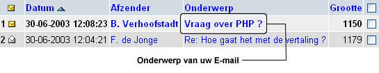

| Om een bericht te lezen, klikt u op het onderwerp van het bericht dat in uw
Postvak In
staat.

 Als u op het onderwerp heeft geklikt, krijgt u een scherm, vergelijkbaar met het scherm rechts getoond:
Als u op het onderwerp heeft geklikt, krijgt u een scherm, vergelijkbaar met het scherm rechts getoond:
De Berichten Menubalk kan gebruikt worden om het huidig geopende bericht te bewerken.
De Berichtkoppen bevatten alle informatie die tevens weer wordt gegeven in uw
Postvak In
. Klik op Alle Koppen om meer gedetailleerde informatie van de koppen weer te geven.
Het bericht zelf is de tekst die de verzender u heeft toegestuurd om te lezen.
De Bladerfunctie is een kleine balk die het voor u mogelijk maakt, snel en eenvoudig naar het volgende of vorige bericht te bladeren. | )